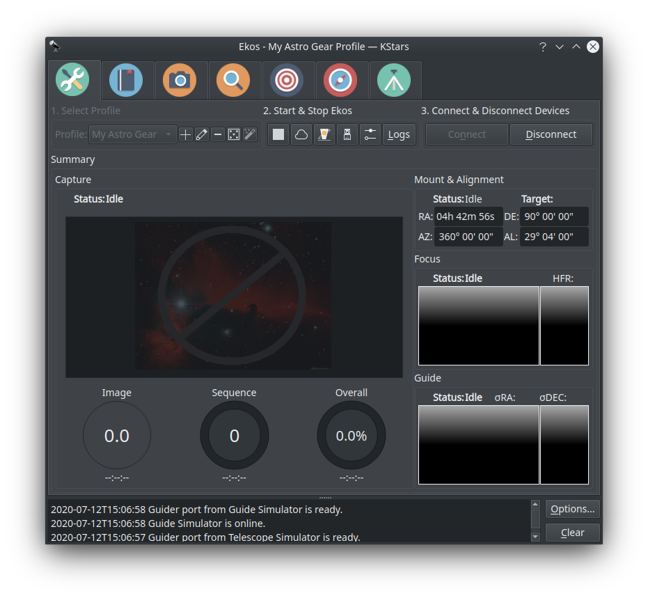
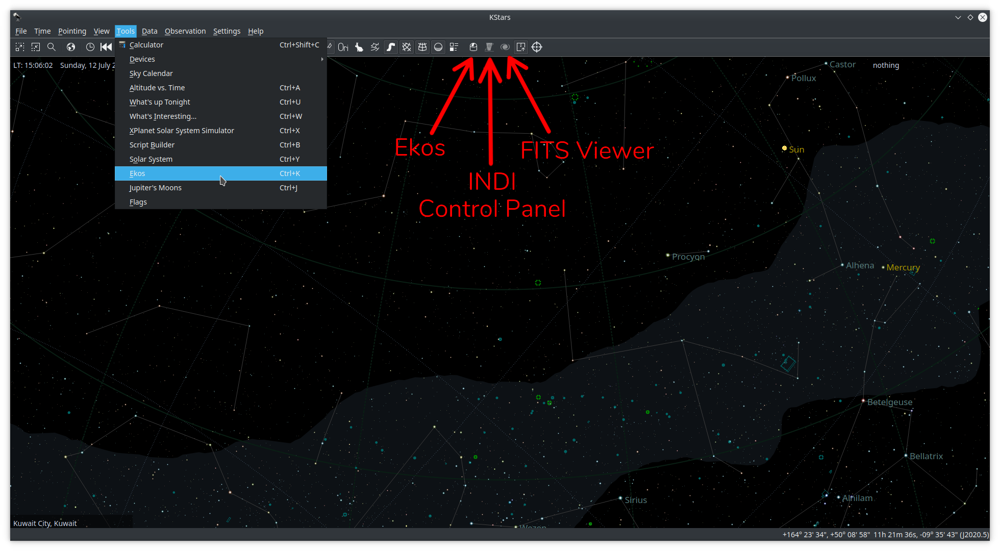
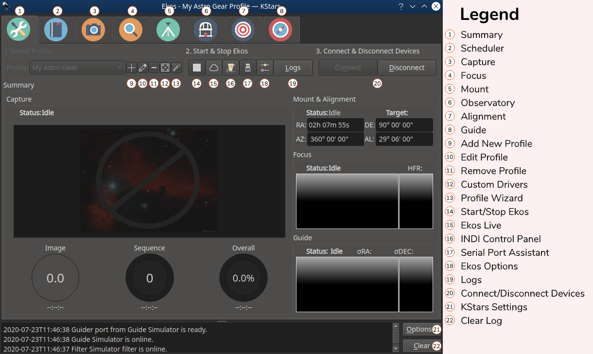
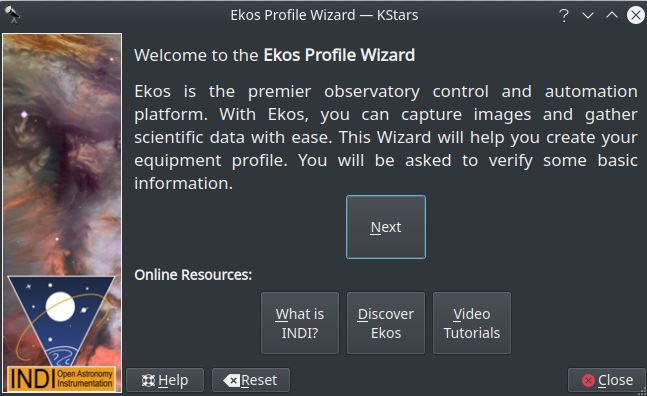
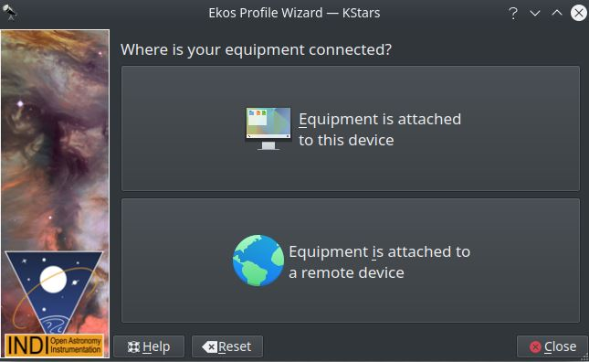
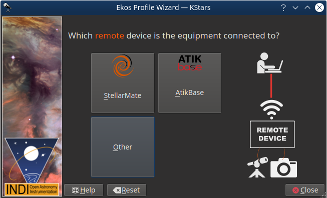
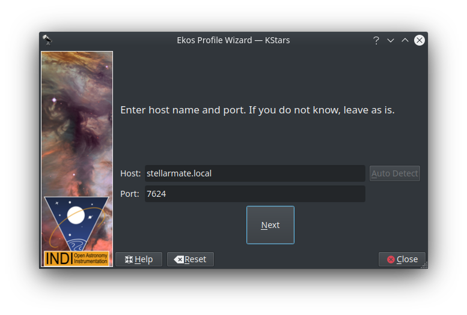
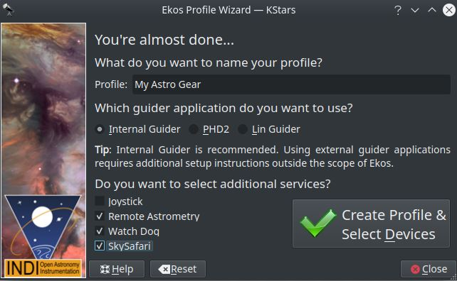
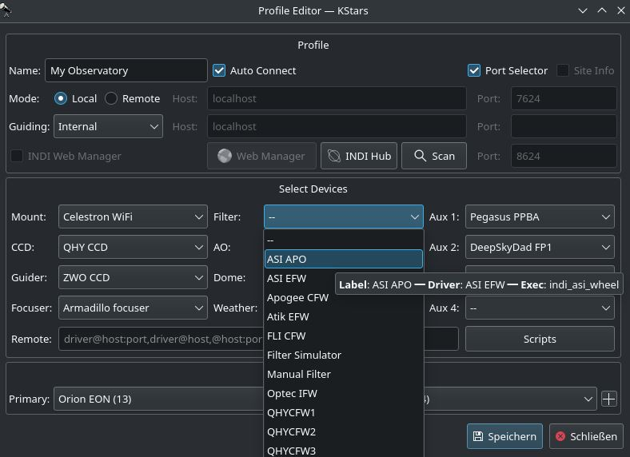

Setup

Ekos is a part of KStars. KStars/Ekos is already included with your StellarMate gadget. It is also available for Linux®, Mac® OS, and Windows® if you want to install on your primary machine. After you run KStars on your PC or on StellarMate (Either directly via HDMI or via VNC), Ekos can be accessed from the Tools menu or via the Ekos on the main toolbar, or by a keyboard shortcut (Ctrl+K). In addition to the Ekos window, KStars provides a more detailed INDI Control Panel where you can directly set and control the device parameters.
When running Ekos, it is not necessary to start INDI Server via StellarMate Web Manager as Ekos manages that transparently.

User Interface
Ekos Astrophotography Tool is organized into several Modules. A module is a set of functions and tasks for a particular step in astrophotography and/or data acquisition. Currently, the following modules are included with Ekos:
- Setup & Summary Module
- Scheduler Module
- Capture Module
- Focus Module
- Mount Module
- Observatory Module
- Alignment Module
- Guide Module
Each module has its own tab and icon in the graphical user interface as illustrated in the screenshot below:

- Summary & Setup Module
- As its name suggests, this is where you will create and manage your equipment profile, and connect to your devices. It also provides a summary view where the capture progress along with the focus & guide operations is displayed in a compact format to convey the most important information relevant to the user.
- Scheduler Module
- After mastering Ekos, users are encouraged to learn how to use the Scheduler module since it facilitates the complete observation process greatly. It enables you to select multiple targets, specify which conditions and requirements to be met, and what frames are required for capture. Afterwards the scheduler intelligently calculates the best observation time for each object and then proceed to control the complete observatory from startup to shutdown.
- Capture Module
- This is the primary module for camera & filter wheel control. Create imaging sequences, capture previews, and watch video streams. It supports rotator control and can automatically capture flat frames in a number of scenarios.
- Focus Module
- Measure the sharpness of your images in the focus module by calculating Half-Flux-Radius. The lower the HFR, the sharper the image becomes. You can run the focus module with or without a focuser. With an electronic focuser, you can run an autofocus operation where Ekos iterates and calculates the optical focus position.
- Guide Module
- To achieve long exposure astrophotography, guiding is necessary to ensure the image is locked and stabilized for the complete duration of the exposure duration. Deviations from the frame with time can lead to blurry images and star trails. In the guide module, it can automatically select a suitable guide star and then lock the mount to always keep that star in its position. If the guide module detects any deviation from this locked position, it sends correction pulses to the mount to bring it back to the original position.
- Mount Module
- Mount control can be either done via the Sky Map interactively or via the Mount Control Panel in the mount module. Configure telescope properties (focal length & aperture) for both your primary imaging telescope and guide scope. However, it is recommended to select the telescopes in the equipment profile and not change the values directly in the mount module.
- Observatory Module
- Dome parking state and position can be controlled in this module. Shutter can be closed or opened. A weather panel is also available for users to check the weather if they have a weather station.
Profile Wizard
The Profile Wizard is a handy tool to setup your equipment for the first time. It should popup automatically the first time you run KStars. Follow the guided instructions to setup your first equipment profile.
- Greeting Page
- 
The first greeting screen contains some links to learn more about Ekos & INDI. Click Next to continue.
- Equipment Location Page
- Next, you will be presented with the equipment location page. Your selection depends on where your equipment is connected to:
- Equipment is attached to this device: Select this option if Ekos is running on your StellarMate (via HDMI or VNC), PC (Windows®/Linux®) or Mac® OS.
- Equipment is attached to a remote device: Select this option if Ekos is running on your PC (Windows®/Linux®) or Mac® OS, and your equipment is connected to a remote computer.
- Equipment is attached to StellarMate: Select this option if Ekos is running on your PC (Windows®/Linux®) or Mac® OS, and your equipment is connected to StellarMate or another remote device.

Click Next to continue.
- Remote Device Type Page
- In case selected the 2nd option in the last step, you shall be presented with the Remote Device Type page, here you will choose what type of device you are using. It could be StellarMate, AtikBase or any other remote devices such as another Computer for example.

- Remote Connection Page
- In case selected StellarMate in the last step, you shall be presented with the Remote Connect Page for StellarMate, here you will enter the hostname or IP address of the StellarMate unit. You can get the hostname from the StellarMate mobile App. Alternatively, you can construct the hostname from StellarMate HotSpot SSID. You should see the SSID when you search for WiFi networks nearby. For example, suppose the SSID is stellarmate. The hostname should be stellarmate.local. That is, if you remove the underscore, and append .local, then you will get the unit hostname. You can always use the StellarMate App to change the unit default hostname to a name of your choice.

- Profile Creation Page
- Now you get to name your equipment profile. Afterwards select which guider application to use. The Internal Guider is the only officially supported selection in StellarMate. You may opt to select PHD2/LinGuider but the details are out of the scope of this documentation. If additional services are desired, check the ones you want to run.

In the example above, we select Remote Astrometry, WatchDog, and SkySafari drivers. The detailed explanations for each is provided in the tooltip when you over them. Once done, click Create Profile button. You should now be presented with the Profile Editor.
Profile Editor

- Profiles
- You can define profiles for your equipment and their connection mode using the Profile Editor. Ekos comes pre-installed with the Simulators profile which can be used to start simulator devices for demonstration purposes:
- Connection Mode: Ekos can be started either locally or remotely. Local mode is when Ekos is running in the same machine as INDI server, i.e. all the devices are connected directly to the machine. If you run INDI server on a remote machine (for example, on a Raspberry PI), you need to set the INDI server host and port.
- Auto Connect: Check this option to enable automatic connection to all your devices after INDI server is started. If unchecked, INDI devices are created but not automatically connected. This is useful when you want to make changes to the driver (e.g. change baud rate or IP address or any other settings) before you connect to it.
- Port Selector: Check this option to enable Port Selector. When creating a new profile, it is checked by default. Port Selector is used to select initial serial and network communication parameters for the devices in the equipment profile. After connecting to equipment for the first time, the Port Selector popup is displayed where the communication parameters can be set before establishing connection. Once connected, the Port Selector option is turned off. it can be toggled to checked in the profile editor to enable it back.
- Site Info: Optionally, you can check the Site Info checkbox and Ekos will load the current city and timezone whenever is Ekos is started with this profile. This can be useful when connecting to the remote geographic site so that Ekos is in sync location and time wise.
- Guiding: Select which Guide application you want to use for guiding. By default, the Ekos internal Guide Module is utilized. External guiders include PHD2 and LinGuider.
- INDI Web Manager: StellarMate Web Manager is a web-based tool to start and stop INDI drivers. You should always check this option when connecting remotely to a StellarMate unit.
- Device Selection: Select your devices from each category. Please note that if you have a CCD with a guide head, you can leave the guider drop-down menu blank as Ekos will auto-detect the guide head from the CCD camera. Similarly, if your CCD includes embedded filter wheel support, then you do not need to specify the filter wheel device in the filter drop-down menu.
- Scripts: Adjust pre-driver and post-driver delays and scripts for each driver. A rule can be defined for each driver in case there is a need to introduce delays before and/or after starting a particular driver. The fields before the driver selection dropdown are to be executed before the driver is started, whereas the fields after the driver selection dropdown are to be executed after the driver started. The script field, if specified, should include the full path to an executable script with the appropiate permissions. All drivers configured in the scripts editor would be started first and in order before the rest of the equipment profile drivers.
- Start & Stop INDI
- Start and Stop INDI services. Once INDI server is established, INDI Control Panel will be displayed. Here you can change some driver options such as which port the device is connected to etc.
- Connect & Disconnect Devices
- Connect to INDI server. Based on the devices connected, Ekos modules (CCD, Focus, Guide, etc.) will be established and available to use.
- Once you are ready, click Start INDI to establish INDI server and connection to your equipment. Ekos shall create the various module icons (Mount, Capture, Focus, etc.) as the connection is established with the device.
Logs
Logging is a very important tool in order to diagnose any issues with either INDI drivers or Ekos. Before submitting any support request, the log must be attached in order to help diagnose the exact issue. Depending on the exact problem, you may need to enable logging for the feature or drivers that exhibit issues. Enabling logging for everything is not recommended as it will produce too much data that would be useful to diagnose the issue and could result in missing the root cause all other. So only enable the necessary logs.
The following short video explains how to use the Logging feature to submit logs.
https://www.stellarmate.com/images/videos/indi_logs_guide.mp4